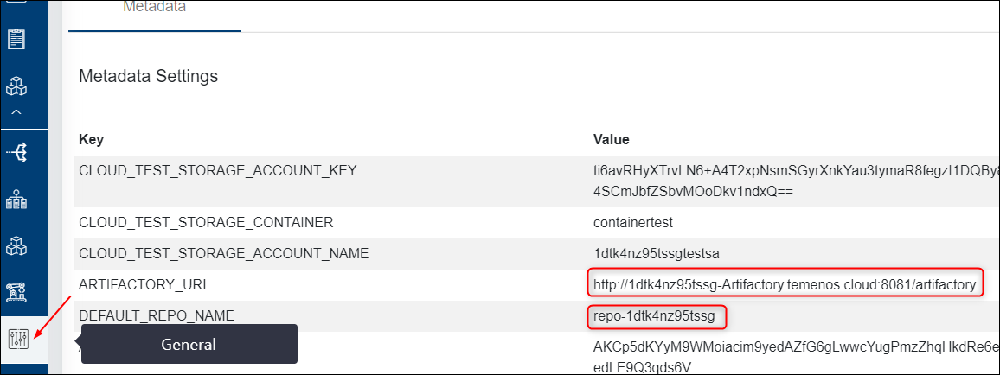
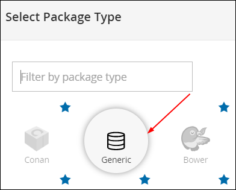
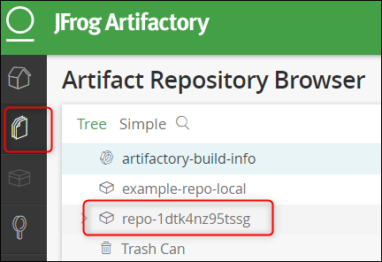
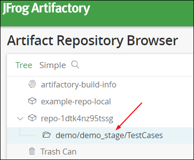
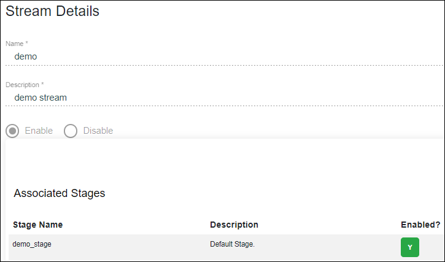
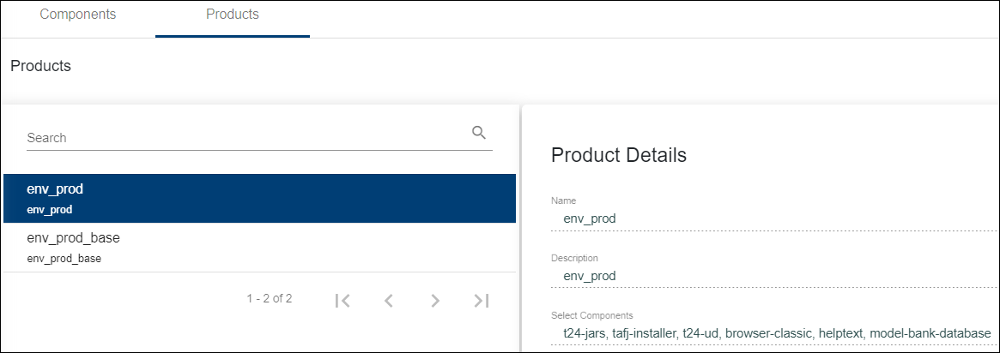
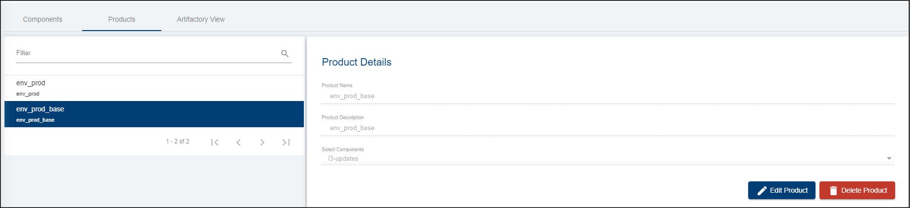

How to Create and Publish a New Template after a Successful Factory Run
This feature offers the possibility to baseline a particular version of a product and create a template from that version. Further anybody will be able to create an environment with the baselined version of the product.
Check Metadata on the portal
- Login to the portal with your credentials.
- Click General button on the left side menu in order to see the metadata of your organization, from which you will need:
- the ARTIFACTORY_URL
- the DEFAULT_REPO_NAME

Create a repository into the artifactory
- Use the ARTIFACTORY_URL in order to login to the artifactory assigned to your organization.
- Login with your credentials.
- Click the Welcome button on the top right and choose Local repository.

- Select the package type as Generic.

- Fill the Repository Key with the DEFAULT_REPO_NAME from your organisation metadata on the portal.
Note
DEFAULT_REPO_NAME from metadata and Repository Key must be the same.

- You can check the created repository by clicking the Artifacts button on the left side menu of the JFrog Artifactory:

Setting the Default Stage
To proceed further with all the configurations required in order to run a factory, you need to have a default stage created.
There are two possibilities to set the stage:
- Either you set it from General and then Add New Metadata:

Or when you create a new stream (see Streams button on the left), if the default stage was not yet configure, a third field will appear at the stream creation requiring to add a default stage. This stage will be automatically added after to the metadata.
After this step, the default stage will be automatically added to the repository into your Artifactory (the Artifactory link can be found into the metadata).

Setting the Stream
Go to the Streams buttons and click New Stream. The default stage will appear automatically associated.

To see all the steps on how to create a stream, please also check the following user guide.
Setting the Stage
Go to Stages button and make sure you create a new stage, the one in the added components will be promoted.
To see all the steps on how to add components and create products, please also check the following user guide.
Setting the Components and Products
- Go to Products button and make sure you add first the mandatory components related to the template that you need to use.
- Then configure the principle and base products. See an example of set-up below:


Also make sure you upload all the components' binaries and test cases into the related folders of the artifactory.
To see all the steps on how to add components and create products, please also check the following user guide.
Setting the Factory
Go to Factories button and click New Factory on the top right.
Make sure you:
- set a name
- set a description
- choose the appropriate environment and test templates
- set the source and base stages (in the below example the same stage was used in order to test the promotion of the components along with the test cases added).
- set the principle and base products.
- click Create.

To see all the steps on how to create a factory, please also check the following user guide.